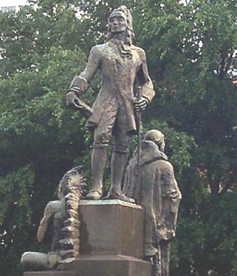

Johnnie and Oberta Baker's Photo Album Gallery Previous Next
|

Jean-Baptiste Le Moyne de Bienville (February 23, 1680 - March 7, 1767) was a colonizer, born in Montreal, Quebec, and an early governor of French Louisiana, appointed four separate times during 1701-1743. He is also known as Sieur de Bienville. |